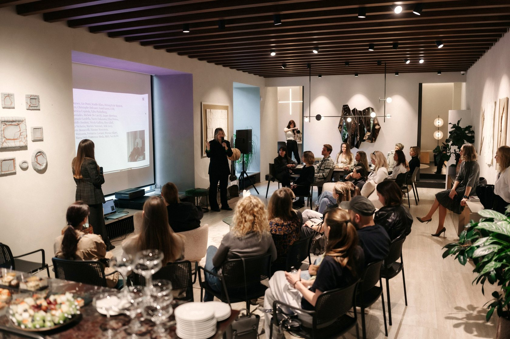
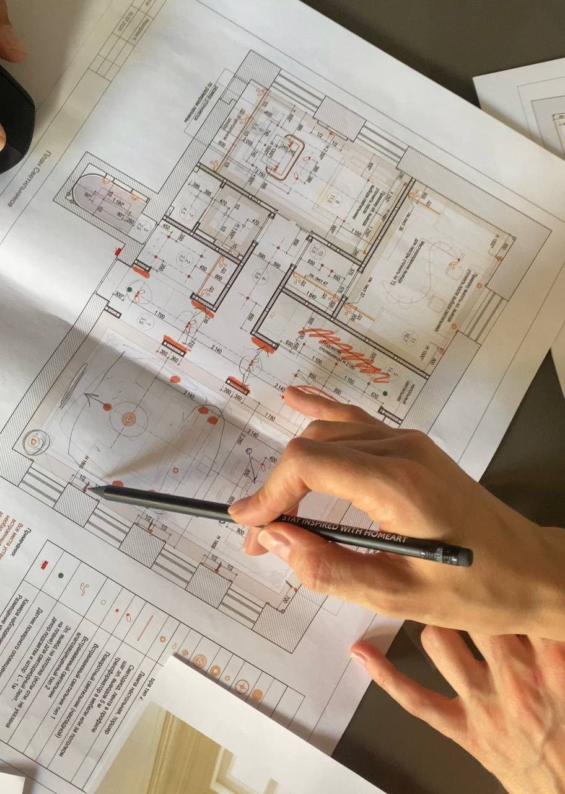
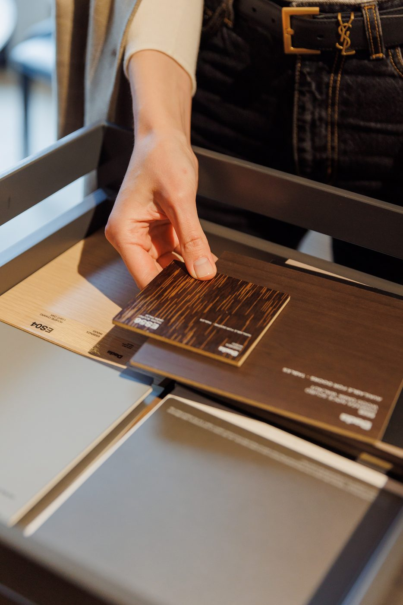
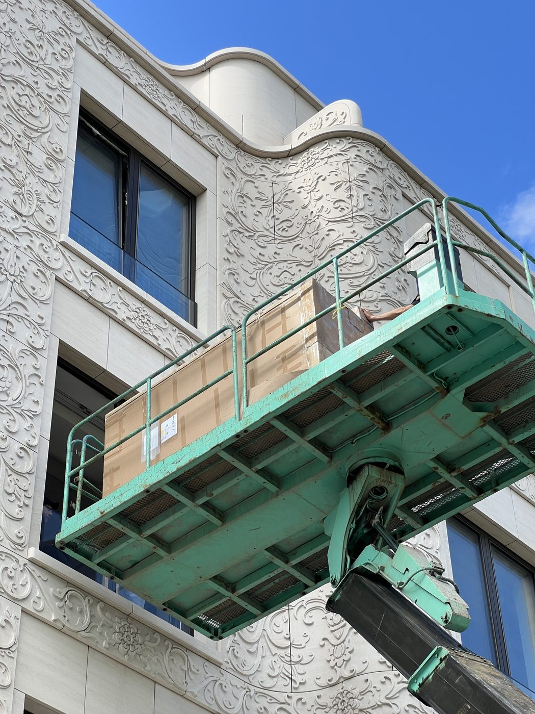

Что HOMEART берёт на себя в вашем проекте
Не все знают, что мы делаем кроме поставки мебели. Ниже — путь проекта от подбора до сборки и каждый сервис: что это и как его запросить.

Подбор и проект
- 1
Комплексный подбор товаров под проект в premium и luxe сегменте
- 2
Несколько вариантов коммерческих предложений в рамках обозначенного бюджета
- 3
Консультации по предварительному проведению смежных работ
- 4
Комплект ведомостей и необходимых чертежей по проекту, в том числе кухни, гардеробные, дверные системы, сантехнические узлы, светотехника

Образцы и поставка
- 5
Доставка каталогов и образцов под встречи и на объект
- 6
Контроль международных оплат и доставки товара с фабрик-производителей до клиента
- 7
Хранение товаров в рамках гибкой складской программы

Приёмка и сборка
- 8
Проверка на целостность и комплектность перед отгрузкой на объект клиента
- 9
Доставка и профессиональная сборка, гарантийное обслуживание
Что можно запросить
Нажмите на нужный сервис — менеджер свяжется и всё подготовит.
Работаете с другим поставщиком?
Начните с одного проекта с усиленным сопровождением. Закрепим менеджера и покажем, как мы работаем, без обязательств на будущее.